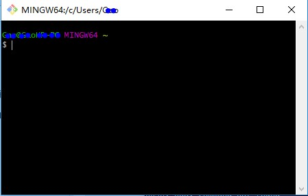
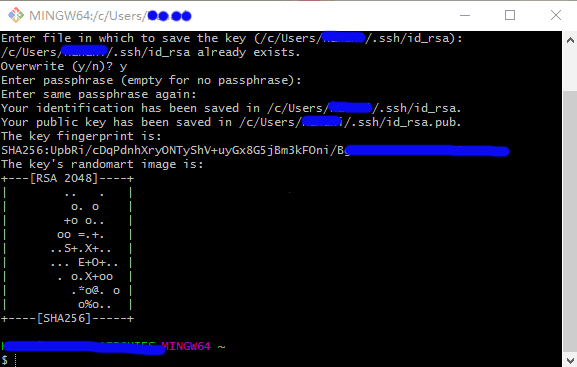
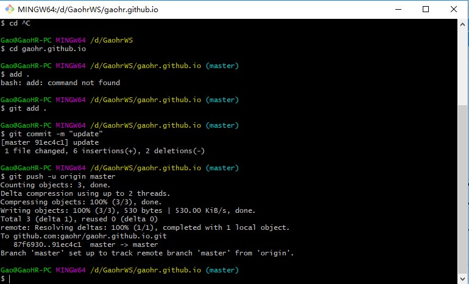

作为当前最流行的开源代码库以及版本控制系统，GitHub已经成为了管理软件开发以及发现已有代码的首选方法，目前已托管430+万Git项目，不仅越来越多知名开源项目迁入GitHub，近年流行的开源库往往在GitHub首发。在GitHub中，用户可以十分方便地找到海量的开源代码。
本文不对GitHub作详细的讲解，主要介绍一下GitHub的安装以及简单的配置和使用。
1 安装Git
Windows版的Git，直接下载安装即可，安装完成后，从安装目录中找到Git Git Bash，出现一个类似命令行的窗口，说明Git安装成功了。

安装完成后，在git bash 命令行里输入：
$ git config --global user.name "Your Name"
$ git config --global user.email "email@example.com"
这两行指令表示这台机器上的所有Git仓库都使用这个配置。当然，你也可以为不同的仓库配置不同的用户名，详情请参阅相关文档。
2 从GitHub中克隆代码库
配置好本地的Git环境之后，我们需要将代码库从GitHub上克隆到本地计算机。
首先在Github.com上注册一个账号。注册好之后，需要设置SSH key，在git bash中输入：
ssh-keygen -t rsa -C youremail@example.com
一路回车，如果顺利的话，在用户目录里能找到.ssh目录，里面有id_rsa和id_rsa.pub两个文件，这两个就是SSH Key的密钥对，前者是私钥，后者是公钥。

然后，登录Github，打开 Account Settings，SSH key页面，点Add SSH Key，Title任意填，在Key文本框里填入id_rsa.pub的内容，点击Add key。目的是使它自动使用你的SSH密钥，而不用每次在git pull或者push时询问你的用户名和密码。
3 克隆代码库到本地
切换到目标路径：
cd <destination folder>
git clone <SSH key and passphrase from account>
比如：
git clone git@github.com:gaohr/gaohr.github.io.git
克隆结束后，切换到克隆目录，在这里可以添加上游远程仓库：
git remote add upstream
比如：
git remote add upstream git@github.com:PyESSI/PyESSI.git
这样，我们就将远程代码克隆到了本地计算机一份。接下来，我们尝试对本地文件做一下修改，然后提交到远程库（你自己的），最后通过pull request命令提交给远程库代码拥有者。
为了测试，简单修改了一下README文件，然后使用git status命令查看本地和远程的差别，随后输入以下命令：
git add README.md
git commit –m "some text”
git push –u origin master
这样就把本地的本次修改提交到了远程库中。

在个人的GitHub目录下可以看到刚才提交的修改，如果想把这个修改提交到上游远程库，需要点击pull request按钮，然后点击Create pull request，就可以把本次修改提交完成了。而上游远程库拥有者就会收到新的pull request并处理了。
4 代码同步与更新
我们学习了如何将本地的修改提交到源代码库，接下来看看如何将远程代码库中的更新同步到本地库中。
比如我在远程库中修改了README.md文件，现在同步到本地。将源代码库更新的内容同步到本地，检查差异，然后再和本机分支合并，输入以下命令：
git fetch upstream
git checkout master
git merge upstream/master
多数情况下，git可以自动合并，如果出现冲突，则需手动处理（冲突内容），再commit提交。
Fighting, GISer!
最新博文